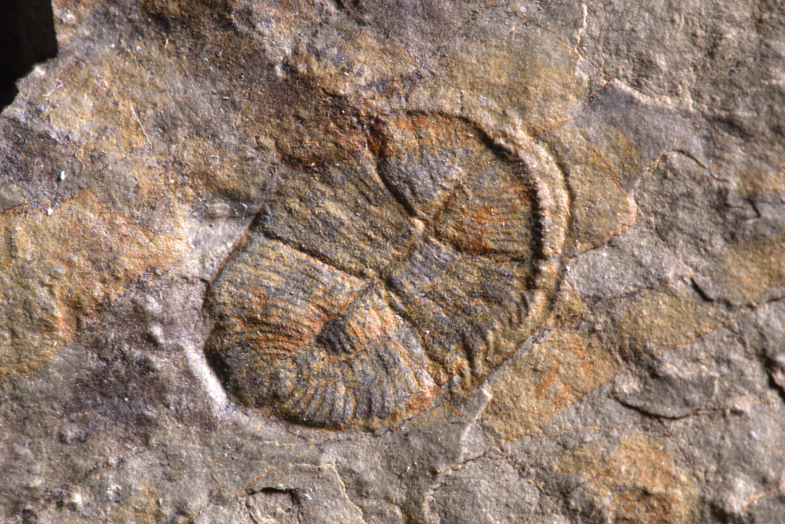
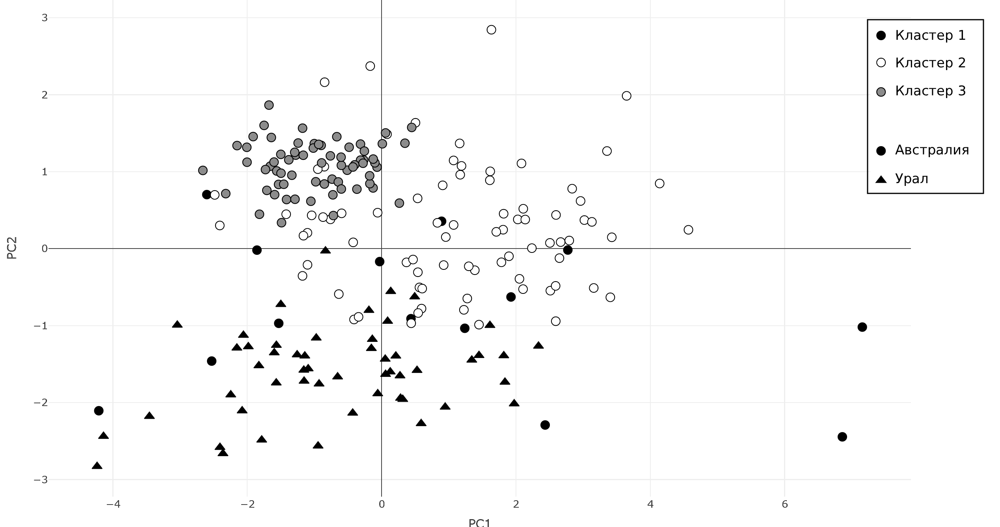
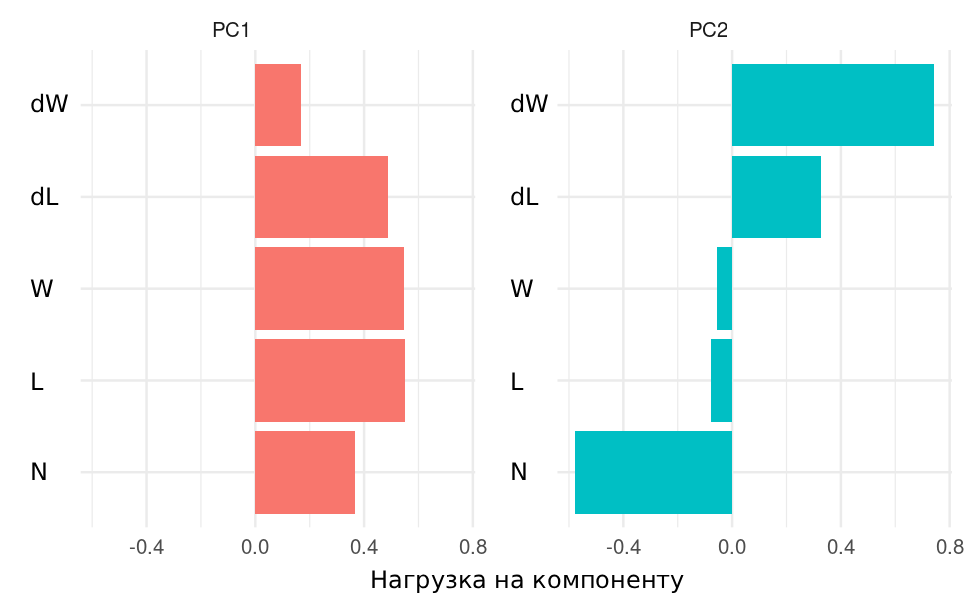
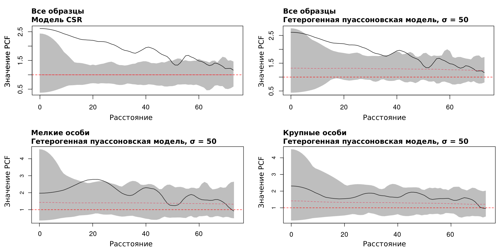

2026
The iconic Ediacaran fossil Dickinsonia from the Central Urals
Sozonov et al. · DOI: 10.1002/spp2.70121
Опубликованное исследование · Количественная палеонтология · R
Я спланировал и выполнил количественное сравнение уральской коллекции с австралийским материалом. Задача состояла в том, чтобы проверить, поддерживают ли сочетания измеримых признаков выделение нового вида Dickinsonia densa.
01 / Исследовательский вопрос
У Dickinsonia уже было описано много видов: при таком материале есть риск как избыточно дробить формы, так и, наоборот, свести разнородные находки к одной. Поэтому для образцов со Среднего Урала потребовались воспроизводимые количественные критерии, которые можно сопоставить с традиционным морфологическим описанием.

02 / Данные и метод
Я подготовил морфометрические данные по уральской коллекции и сопоставил их с опубликованными измерениями австралийского материала. Анализ строился из нескольких дополняющих этапов: каждый отвечает на отдельный вопрос, а не автоматически присваивает образцу вид.
PCA (анализ главных компонент) сжимает набор взаимосвязанных измерений до нескольких осей, на которых проще увидеть общую структуру различий. Модельная кластеризация проверяет несколько вероятностных вариантов группировки без заранее заданных классов.
BIC и ICL — информационные критерии: они помогают выбрать вариант, который достаточно хорошо описывает данные, но не усложняет модель без необходимости.
Основной анализ выполнен в R: readxl, dplyr и tidyr для подготовки данных; mclust для моделей смесей; ggplot2 и plotly для визуализаций.
Исходные измерения в публичную версию не включены.
03 / Результаты
В основном сравнении по пяти признакам выбранная модель включала три компонента. Уральские образцы заняли согласованную часть морфопространства; частичное перекрытие с австралийским материалом было учтено при интерпретации. Вместе с диагностическими морфологическими признаками этот результат стал независимой количественной линией доказательств при описании нового вида.


Как это интерпретировалось. В различение образцов вносили вклад общие размеры, число модулей и пропорции дельтоидальной области. Статистический анализ задавал проверяемую основу для сравнения, а окончательный таксономический вывод принимался по совокупности количественных и морфологических данных.
04 / Размерная и пространственная структура
Для массового захоронения на одной поверхности я отдельно анализировал распределение длины тела и пространственное расположение отпечатков. Это добавляет к систематическому исследованию палеоэкологический контекст.
Функция парной корреляции (PCF) проверяет, встречаются ли пары объектов на заданном расстоянии чаще, чем ожидалось бы при случайном размещении. Мелкие экземпляры образовывали локальные скопления, тогда как крупные располагались более разреженно.
Зачем это нужно. Анализ не определяет вид, но помогает отделить возможные биологические закономерности от простой визуальной оценки отпечатков и показывает, как методы пространственной статистики работают с ископаемой популяцией.

05 / Личный вклад
Граница авторства. Описание вида и итоговые публикации — результат коллективной работы. На этой странице мой вклад выделен на уровне планирования количественного исследования, анализа данных и интерпретации статистических результатов.
06 / Публикации
2026
Sozonov et al. · DOI: 10.1002/spp2.70121
2020
Mitchell et al. · DOI: 10.1098/rsfs.2019.0109
2019
Sozonov et al. · DOI: 10.3989/egeol.43587.571